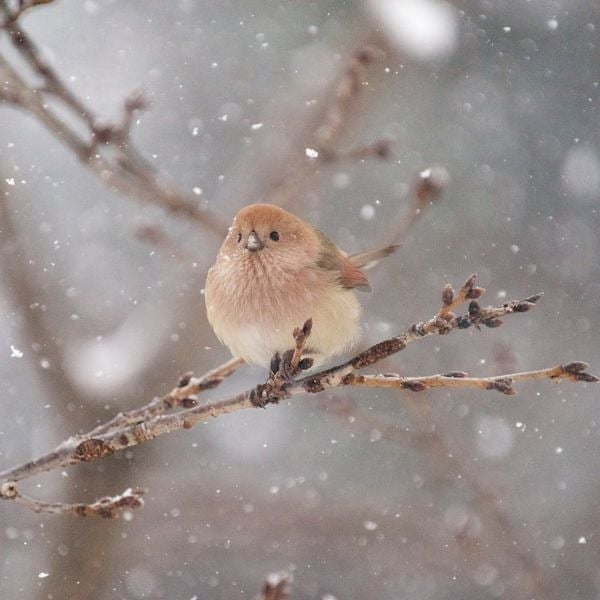
바로 뱁새
정확히는 붉은머리 오목눈이
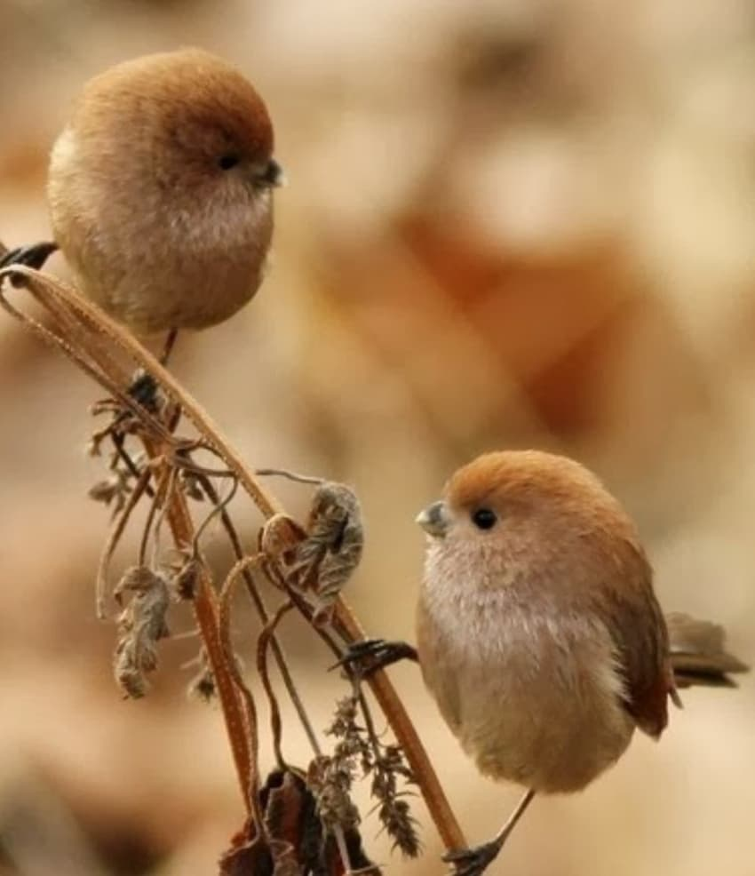
이 통통하고 빵실한 귀여운 새는 사실 참새만큼 아주 많고 흔한 한국의 텃새임
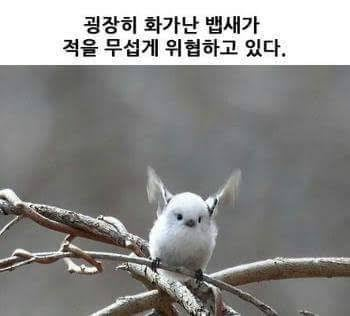
그러나 아주 억울한 새이기도 한데... 흔히들 뱁새 하면 아주 잘 알려진 위 짤의 하얀 새로 많이들 생각하기 때문임
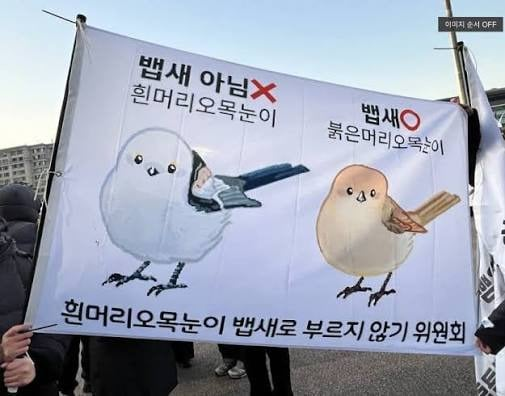
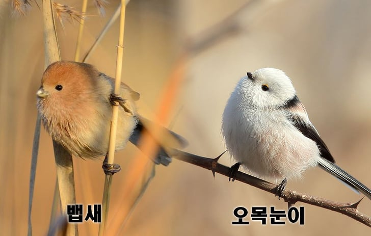
하지만 저 하얀새는 뱁새가 아니다... 흰머리 오목눈이임
뱁새와 외형은 똑같지만 뱁새의 깃털은 잘 구운 토스트색이라죠
무엇보다 오목눈이는 뱁새처럼 한국 텃새가 아니라 주로 홋카이도 같은 추운 지방에 살고, 겨울에만 우리 나라에 옴
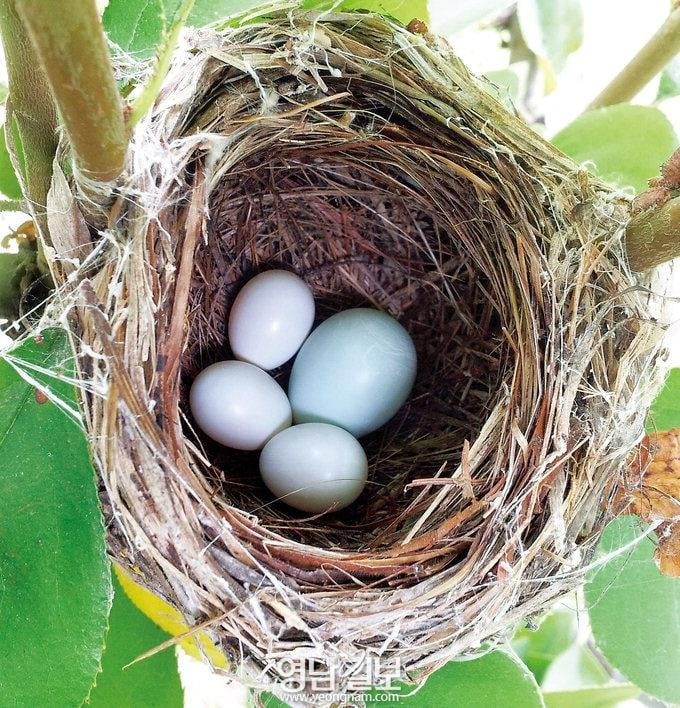
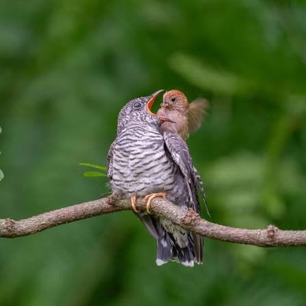
뱁새가 억울한 새인 이유는 하나 더 있는데, 주로 뻐꾸기에게 탁란 당하는 대표적인 피해조 중의 하나이기 때문임
몸집도 작고 하찮은 게 뻐꾸기 새끼 먹여살리느라 애쓴다죠
근데 뻐꾸기도 무조건 악역은 아닌 게 뱁새 개체가 많아서 저런 탁란이 개체수 조절에 도움을 준다고 함
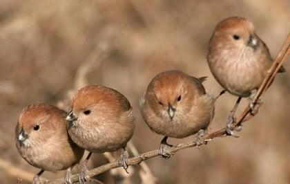
뱁새를 실제로 보면 진짜 개 귀여븜
손가락 두마디쯤 되는 콩알만한 새가 꼬리를 살랑살랑 흔들면서 콩콩
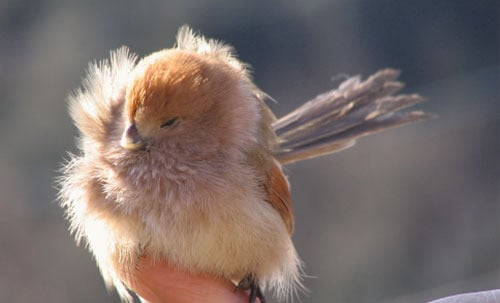
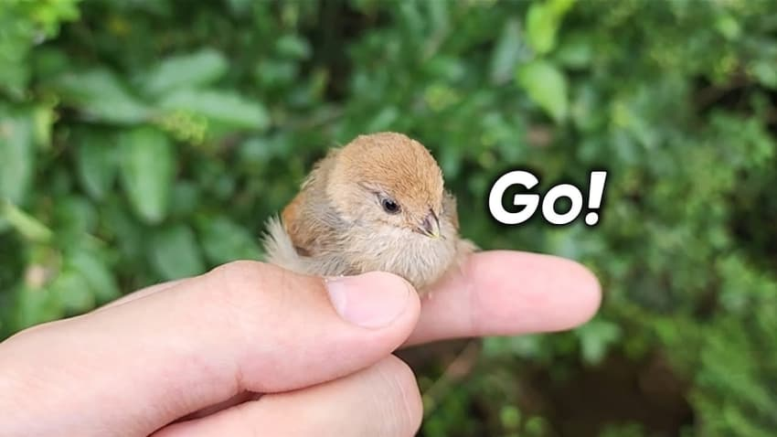
손가락이랑 비교했을 때 크기 보임? 진짜 넘 작고 소중함
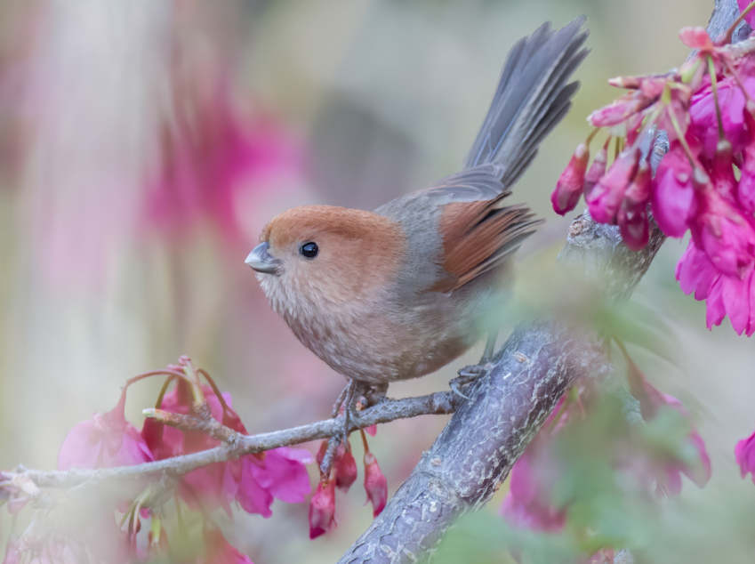
참새 개체수를 능가할 정도로 수가 많고 흔한 개체수에 비해 사람들은 이 뱁새를 잘 보지 못하는데 이유는 이 녀석들이 워낙 작기도 하고 겁도 많아서 잘 숨기 때문
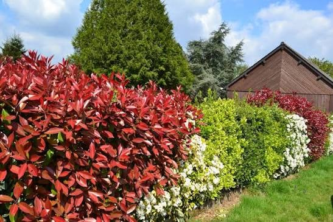
주로 요런 공원의 관목 덤불 안에 콩알만한 여러 마리가 주렁주렁 매달려서 숨어 있음ㄷㄷ 그래서 개체수는 많아도 잘 눈에 띄지 않는 거
눈에 보이지는 않아도 뱁새 우는 소리 들려주면 다들 이게 뱁새 소리였구나 할걸
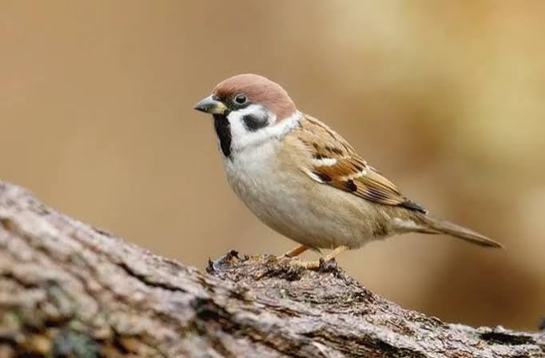
혹은 참새랑 비슷한 갈색이라 뱁새를 보고도 참샌가? 하기도 함 하지만 다릅니다.
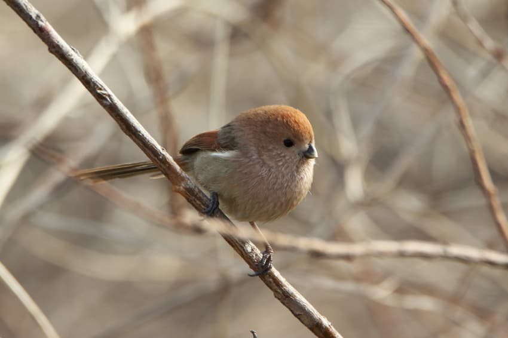
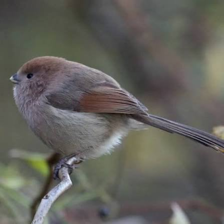
통실빵실한데 털찌면 더 귀여워
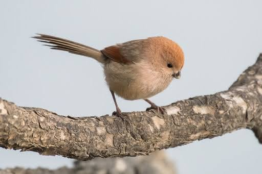
다들 뱁새의 매력에 빠져보셈
댓글
수집 당시 댓글 72개
ㅇㅇ1 · 11.10 02:39:13
ㅇㅇ · 11.10 02:41:42
ㅇㅇ · 11.10 02:41:49
정연신 · 11.10 02:43:02
ㅇㅇ · 11.10 02:48:58
땨뗘(봇) · 11.12 07:10:06
파도. · 11.12 07:13:44
· 애기연지벌레 · 11.12 11:43:56
· 파도. · 11.12 12:10:55
ㅇㅇ · 11.12 07:17:05
ㅇㅇ · 11.12 07:22:55
· ㅇㅇ · 11.12 16:41:31
ㅇㅇ · 11.12 07:25:40
ㅇㅇ · 11.12 07:26:54
· ㅇㅇ · 11.12 14:02:14
· ㅇㅇ · 11.12 14:02:31
Zintp_찐팁 · 11.12 07:27:08
ㅇㅇ · 11.12 07:27:15
Zintp_찐팁 · 11.12 07:29:15
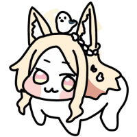
천안문 · 11.12 07:37:31
ㅇㅇ · 11.12 07:38:17
ㅇㅇ · 11.12 07:42:15
· 빙륜환 · 11.12 08:20:46
ㅇㅇ · 11.12 07:44:44
· ㅇㅇ · 11.12 07:46:00
ㅂㄹㅌ · 11.12 07:47:17
ㅇㅇ · 11.12 07:51:26
그정돈
아님;;
ㅇㅇ · 11.12 07:55:37
ㅇㅇ · 11.12 08:00:49
ㅇㅇ · 11.12 08:11:52
빙륜환 · 11.12 08:20:32
ㅇㅇ · 11.12 08:26:34
ㅇㅇ · 11.12 08:26:41
· ㅇㅇ · 11.12 09:41:32
ㅇㅇ · 11.12 08:35:48
ㅇㅇ · 11.12 08:37:12
ㅇㅇ · 11.12 08:47:11
ㅇㅇ · 11.12 08:51:21
ㅇㅇ · 11.12 08:59:49
ㅇㅇ · 11.12 09:03:22
운빨좆망겜 · 11.12 09:07:40
ㅇㅇ · 11.12 09:12:14
ㅇㅇ · 11.12 09:13:40
ㅇㅇ · 11.12 09:34:22
ㅇㅇ · 11.12 09:51:24
ㅇㅇ · 11.12 09:55:52
ㅇㅇ · 11.12 10:00:09
ㅇㅇ · 11.12 10:08:37
pyuru · 11.12 10:16:24
ㅇㅇ · 11.12 10:26:54
이지러너 · 11.12 11:09:32
ㅁㅇㄻㄹ · 11.12 11:22:00
ㅇㅇ · 11.12 11:40:57
ㅇㅇ · 11.12 12:10:41
ㅇㅇ · 11.12 12:14:09
ㅇㅇ · 11.12 12:14:19
ㅇㅇ · 11.12 12:52:16
펜도르 · 11.12 12:54:22
ㅇㅇ · 11.12 13:02:42
ㅇㅇ · 11.12 13:11:57
Machiavelli · 11.12 13:17:03
ㅇㅇ · 11.12 13:22:41
ㅇㅇ · 11.12 13:31:50
ㅇㅇ · 11.12 13:43:42
ㅇㅇ · 11.12 13:44:20
ㅇㅇ · 11.12 14:30:55
ㅂㅈㄷㄴ · 11.12 14:36:01
ㅇㅇ · 11.12 14:38:27
ㅇㅇ · 11.12 14:50:38
ㅇㅇ · 11.12 16:49:53
ㅇㅇ · 11.12 16:59:30
ㅇㅇ · 11.12 17:45:02